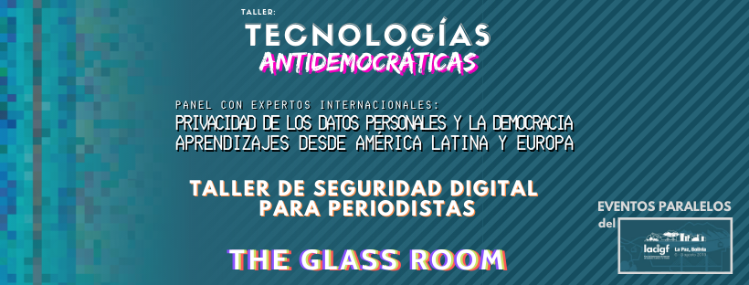
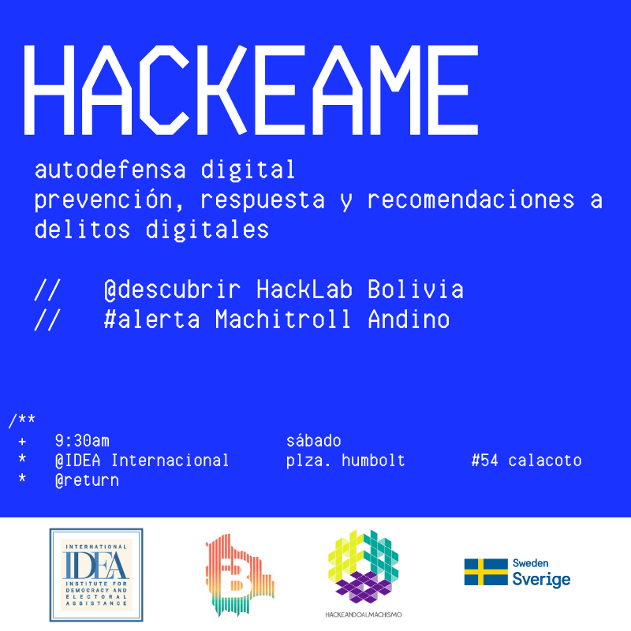
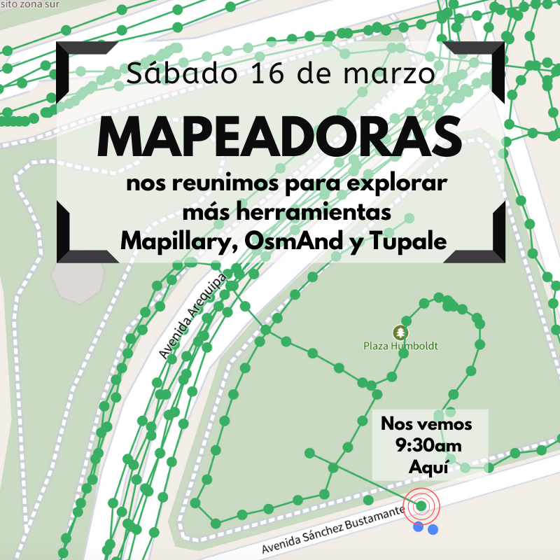
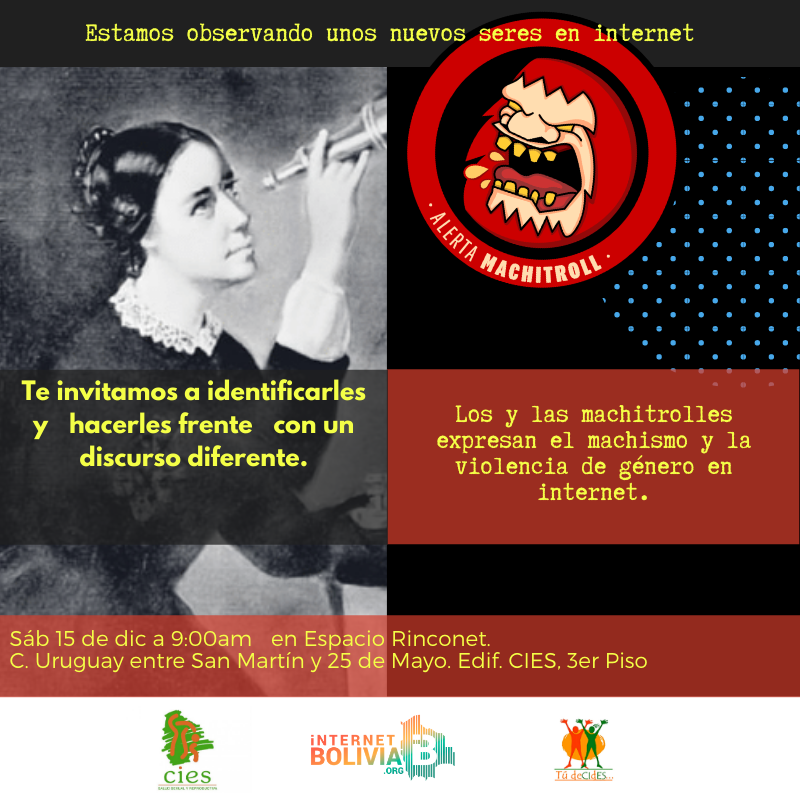
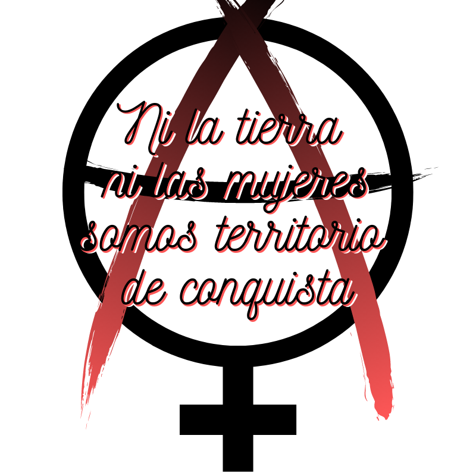

mezclas
diseños para redes sociales
a collection of plagiaristic invitations to activites with agrupaciones con las que comparto pensamientos y creencias and other original art.
Party invitation
1st IRL meet with the IB crew

Open Data Day 2019
Invitation to create an open data citizen repository that works as a backup for lost data sets and ensuring access to databases in a single place.

Internet Regulations
Invitation to debate on internet governance organized by the InternetBolivia.org Foundation

LACIGF Side events in Bolivia Organized 9 private and public side events for the XII Foro Regional de Gobernanza de Internet de América Latina y el Caribe (LACIGF).

Workshops on Gendered violence facilitated by ICTs
Talleres sobre violencia de género facilitadas por las TIC Facilitadora en estrategias de autodefensa for women databodies.

#CallesVioletas and OpenStreetMap collective mapping of hostile places in La Paz. Mapeo participativo del espacio hostil para las mujeres

Resisting online hate speech: Facilitadora en respuestas feministas to online hate using the #AlertaMachitroll methodology from Fundación Karisma.

Sexuality and ICT: Facilitadora en apps de citas y menstruales: usos, riesgos y hacks.

Seminario de plantas prohibidas
Organized a seminar for the legalization of "forbidden" plants.

activism
against abuse of mother nature junto a mujeres feministas
